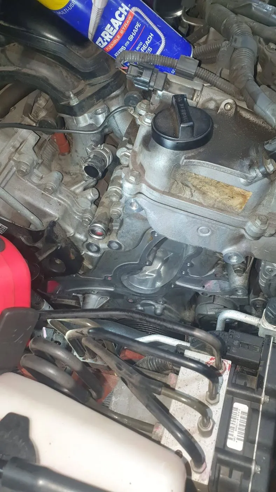
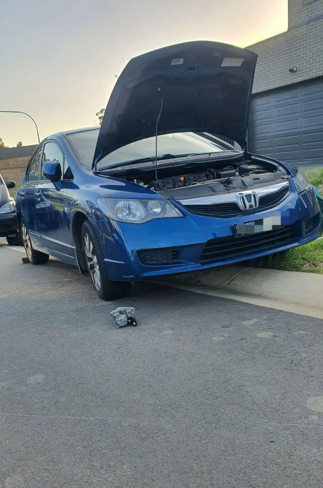
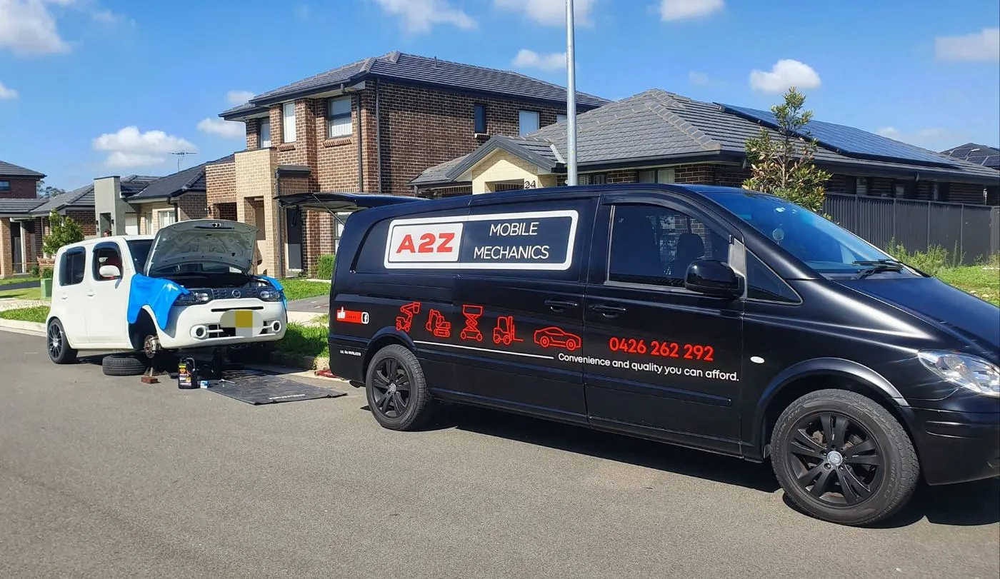
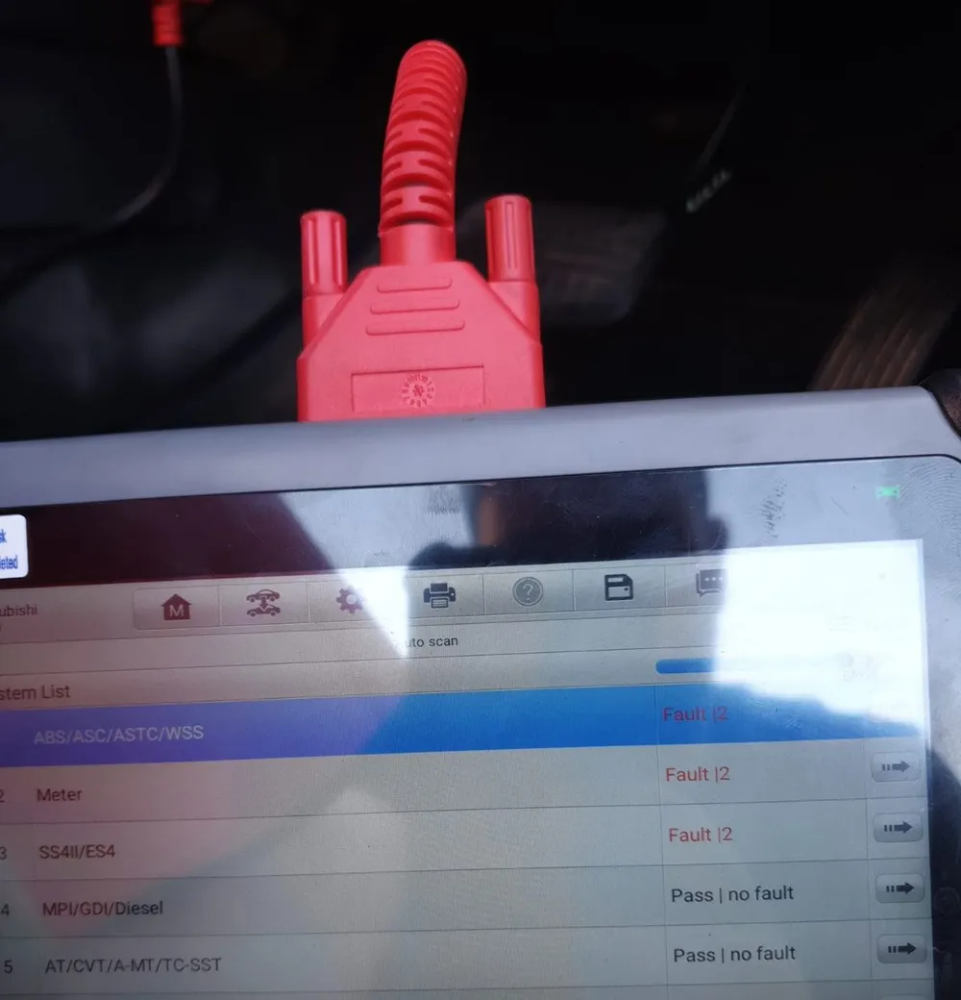
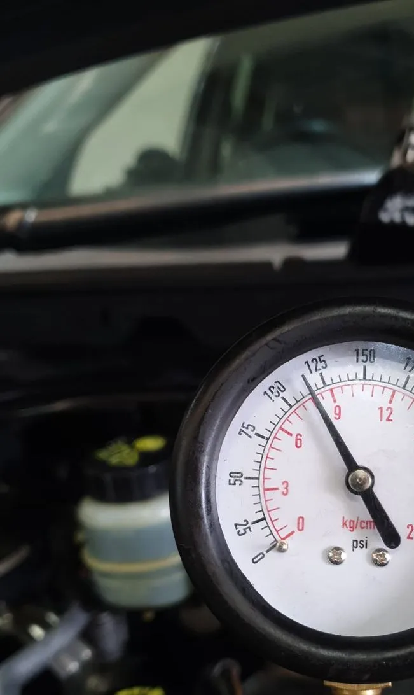
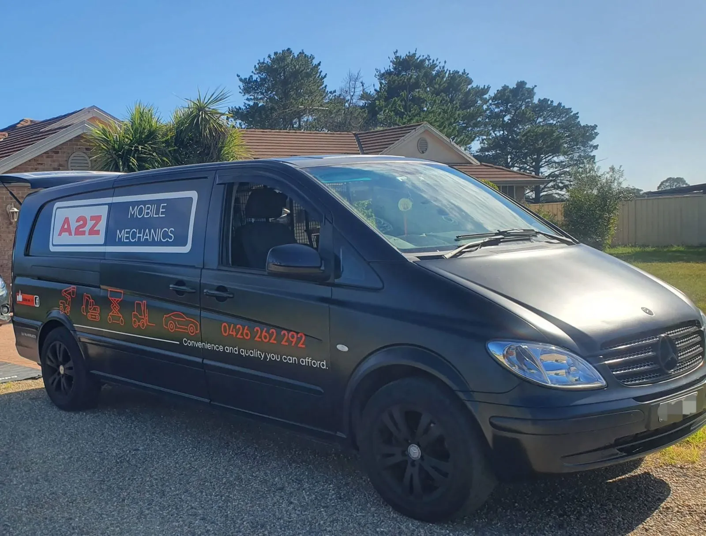
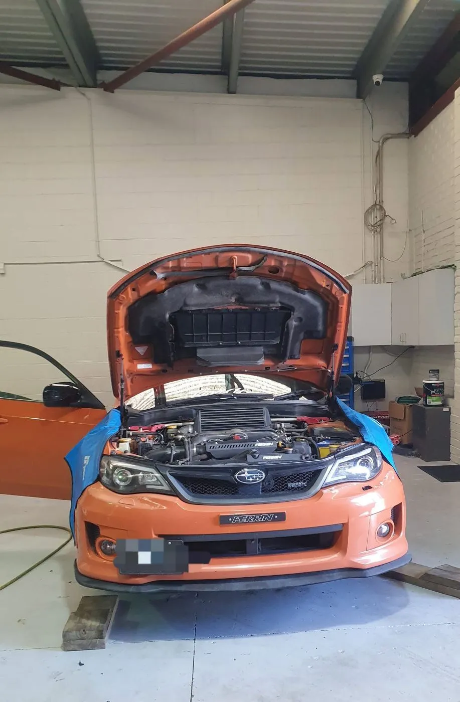
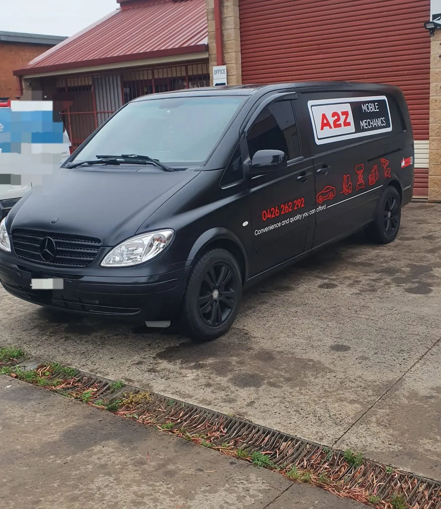
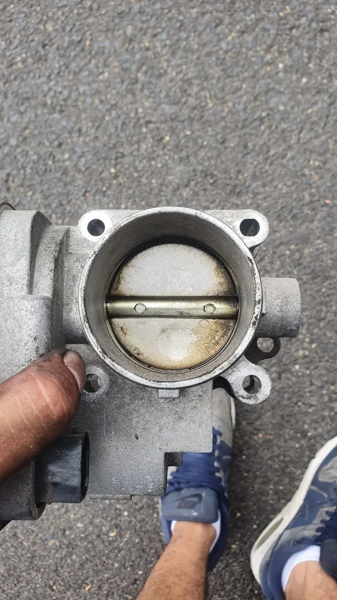
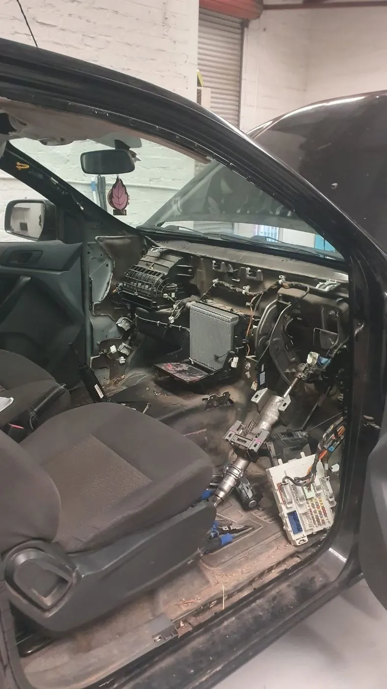

Air conditioning
Air-con blowing warm? We track down the fault and repair it so the cabin runs cold again before summer hits.
- Weak or warm air
- Fault finding
- Repairs

Fourteen ways we keep your car on the road. Everything can be done at your home or workplace, or at our base in Narellan.
Air-con blowing warm? We track down the fault and repair it so the cabin runs cold again before summer hits.

Pads, rotors and brake lines — checked, measured and replaced only when they actually need it. We'll tell you honestly if the rears can wait until next service.

Too busy to wait around? We can pick your car up, service it and drop it back to you when it's done.

Warning lights, rough running, electrical gremlins or a car that won't start — we plug in professional scan tools and test until we find the real cause.

From timing belts, tensioners and steering pumps through to full engine rebuilds, including VW, Mercedes and other European makes.

Local businesses trust us with their work vehicles and machinery. We keep the fleet running so your team stays on the job.

Buying a used car? Our pre-purchase inspection is thorough, done with the right tools, and booked around your working hours.

Logbook services done to the manufacturer's schedule, so your new-car warranty stays intact — at your home or workplace.

Regular minor services and full major services for everyday cars, 4WDs, utes and vans.

Car won't start or let you down? Call us — we often get out the same day and help organise a tow if it's needed.

Quick, clean oil and filter changes — and we check your fluids and tyre pressures while we're there.

Rego due? Our customers get their pink slip done quickly, often the same day you call.

Clunks, uneven tyre wear or a car that wanders on the road — we repair suspension and steering faults, including steering pumps.

Timing belt and tensioner replacement done on time, so a worn belt doesn't turn into an engine rebuild.

Don't see your problem here? It's probably still something we can help with — call and ask.
Describe the symptoms over the phone and we'll tell you what to check, what it might cost and when we can get to you.